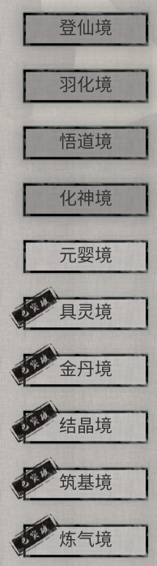
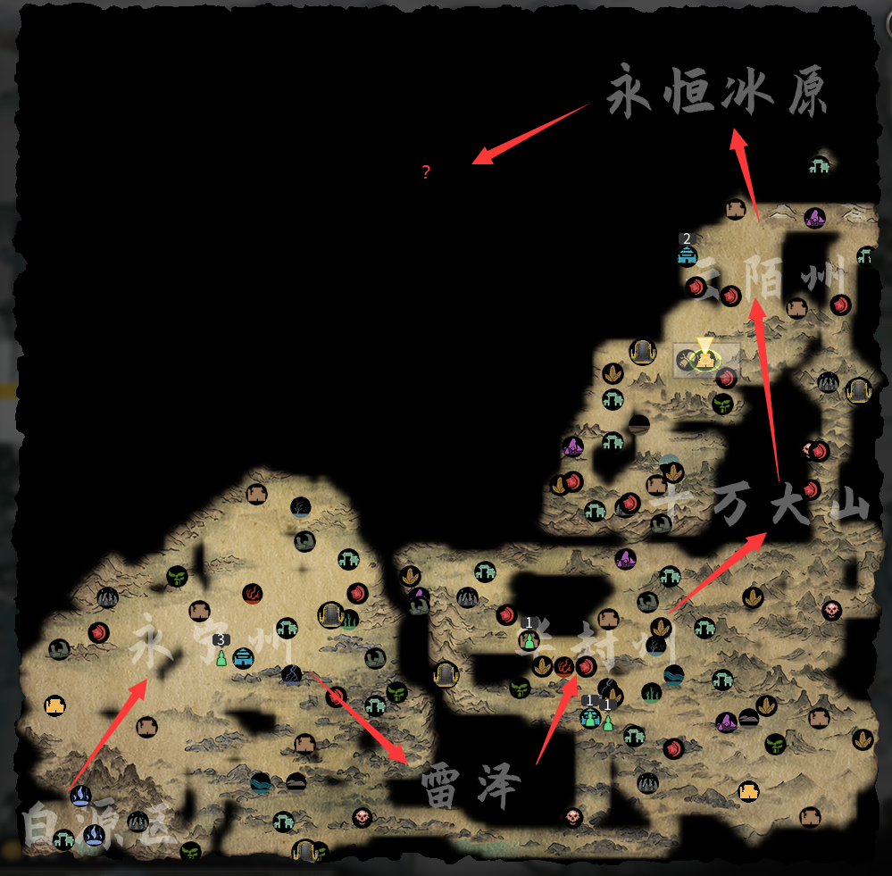

最近啥也不想干，想找个能水时间的游戏盘一下。于是就有了这篇锐评
先说结论：烂！
介于这游戏最近的风评(以及68元的售价，我觉得这游戏最多卖40)，我直接上网顺了个盗版。
首先让我非常难绷的是它的mod架构。官方一套，民间n套。光是搞明白大体有几套东西要装就费了不少劲。而最后废了半天劲把各种不同框架搞好然后把mod装进去，却发现实际上大部分mod的文件结构都大同小异(((
mod这方面不好的地方也就达此为止了，后来瞎jb调的时候发现这些框架居然能热重载，感觉还是非常的爽。
相比之下，游戏内容就是纯纯的灾难。
1.游戏节奏
 节奏非常的奇怪！
大致上来说，游戏被不同的境界划分成了10层，然后每两层开一张新地图。然后从第一张玩到现在第三章，我的感受是：基本上没区别。2和3张基本上就是第一张plus版。玩起来感受就是：
绷，单机网游是吧？每个境界雷打不动2次瓶颈，每个地图的两个境界突破方式复制粘贴，第一次多选一，第二次一种，第一次需要物品XX丹/XX气/XX珠，第二次XX丹(元婴改成了一种特殊物品，但是说白了也是大同小异的东西)。
阻挡你去新地图的屏障也是一样的，搞个刷怪区，里头放个大boss。每张地图做个长事件，能打通就基本上有能力去下个地图......无聊不无聊啊？大把大把的时间被浪费在手动刷材料上——而且这些东西，说白了毫无区别。游戏的其它部分也是一样，就不一一赘述了，基本上就是上一个地图的东西复制粘贴，然后少部分稍微加点无关痛痒的料。游戏体验从大通第一张图后就开始急剧下降。
2.游戏机制
一个脑子正常的开发者，就知道在有刷刷刷要素的情况下弄点可以节省精力的机制来方便玩家快速度过没有任何意义的阶段——而鬼谷八荒不知道捏。整个游戏的垃圾功能让刷刷刷带来的负体验进一步加重：
--超高频率的月末加载。
我日，是哪个傻逼想出来这个脑残机制的？在最开始脚力(脚力越大，同游戏时间内能走的越多)还比较残废的阶段，我走个几十步，一个月就到底了。(最开始貌似是1格一天？差不多30步就开始读条)然后开始强制读条。
然后我就只能在这个期间刷手机。月末变化的机制不知道是哪个傻逼写的，每次跑起来都慢到批爆。我大概能猜到这个机制在干嘛，就是把世界里几万个AI玩家能跑的步数都挨个跑一遍。这么水的功能不是一眼拉个异步并行跑？至于每次在那里转半天么。或者你实在不行，月末改季末年末不是一样？无非是怪物刷的慢点，真改了平衡一下让玩家有事做就是了。当然实际上大概应该是开发者发现，以自己的水平压根做不到让几万个对象能在玩家走路的时候并行干事，所以只能用月末更新这种一眼假的方法摁造。
--几乎为零的自动化
一个刷刷刷游戏，没有自动化？实在想快速结束内容？那就只能全部跳过！我没在说游戏的某个功能，整个游戏都是这个德行，从最早的过场内容开始，你就没法跳。即使你已经开了n个档，通了n次流程，新开档你还是得等过场写完字，播完动画，放完提示。才能开始游戏。
而实用的自动功能？那更是没有，所有事情都得手动，手动刷怪，手动修炼，手动刷任务。即使整个任务已经来来回回接了一百遍，下一次还是得老老实实进城(哈哈，进城也有动画捏)或者会宗门，点进任务栏接上，然后再退出去屁颠屁颠跑到任务地点刷。每次就那么不到十种任务，来来回回发，来来回回做，就为了用最快速度刷到指定能力，然后开新内容——然后新内容就是老内容套皮捏。
--极其复杂的数值系统
为了体现我的游戏很多样化，我要往游戏里塞6种功法，6个灵根，6种资质，19种属性，技能也要分五种，每个技能再往里套3个小机制......我日你妈，你他妈教程教一半就开始推主线，顺便往游戏里可了劲的塞各种花里胡哨的玩意。开局神器弄上个三个，两个还得开线开到一定程度才能用。用？用你妈，我直接弃游。甚么？你要我润之前告诉你这些杂七杂八的功能有什么核心玩法？玩法就是刷！
NMSL
3.综合评价
说白了，这游戏从中前期开始体验就很差劲，按10分制算大概在3分。游戏性不是靠堆很多美术资源，搞很多小功能，弄很多小技术能提高的。明明好好安排一下这么多功能完全可以做出体量小一些，但是游戏性强得多的作品，但是开发者就是要瞎搞。要是我能耐着性子做这么多功能，现在早就实现财富自由力。
然而今天，鬼谷八荒是由张三自主研发的一款多半差评的steam游戏，后面忘了，总之令人感叹。